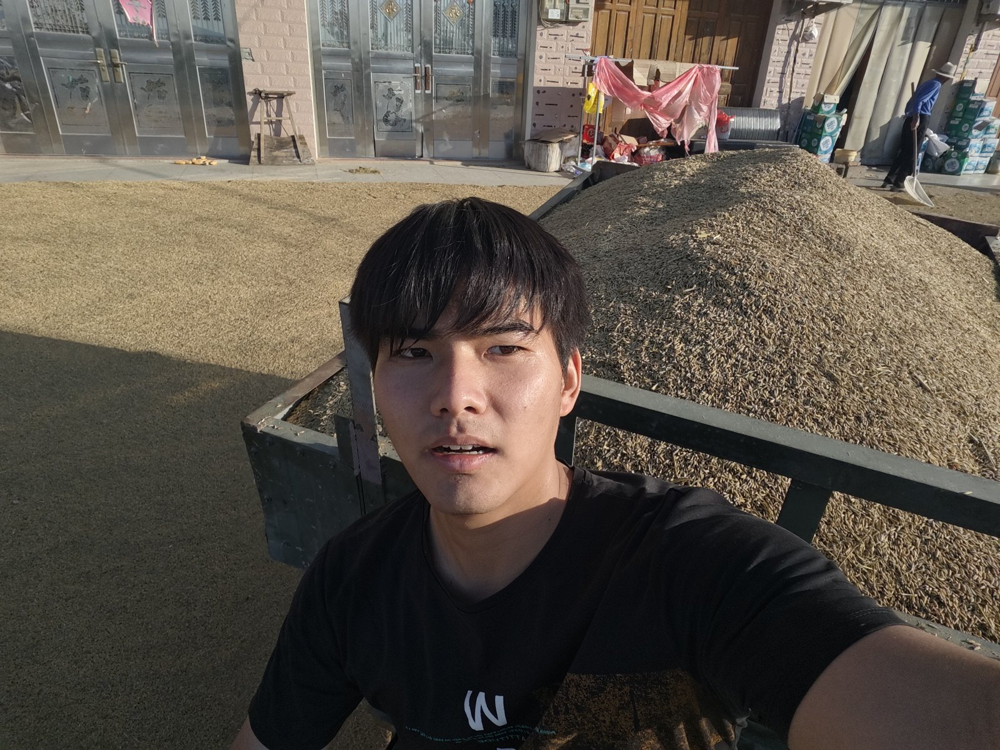
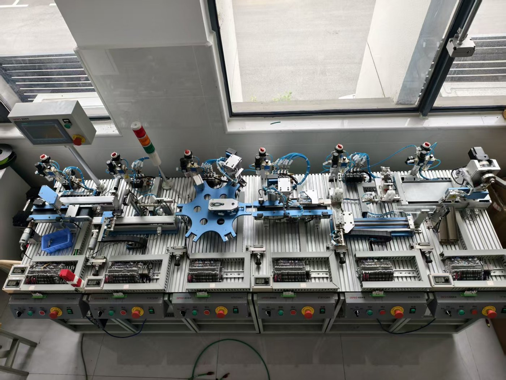
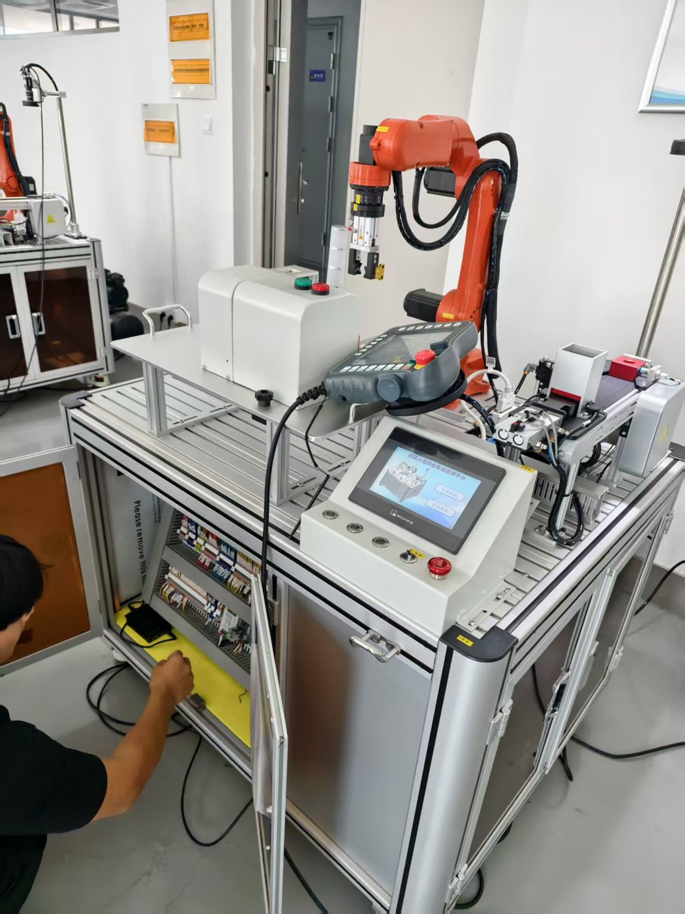
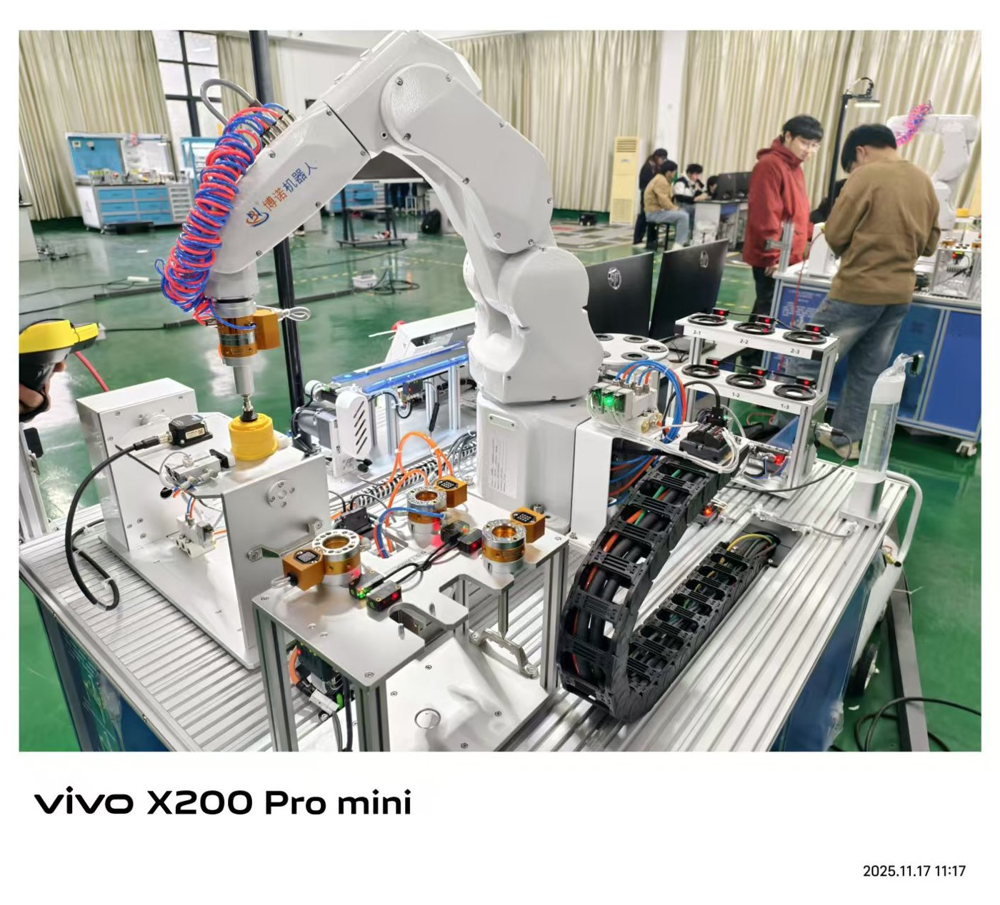
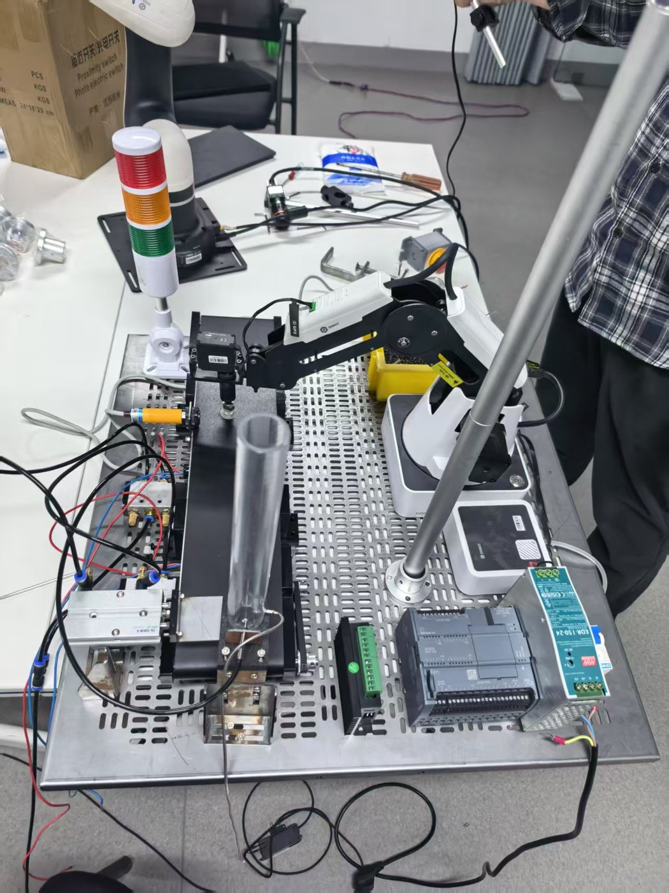
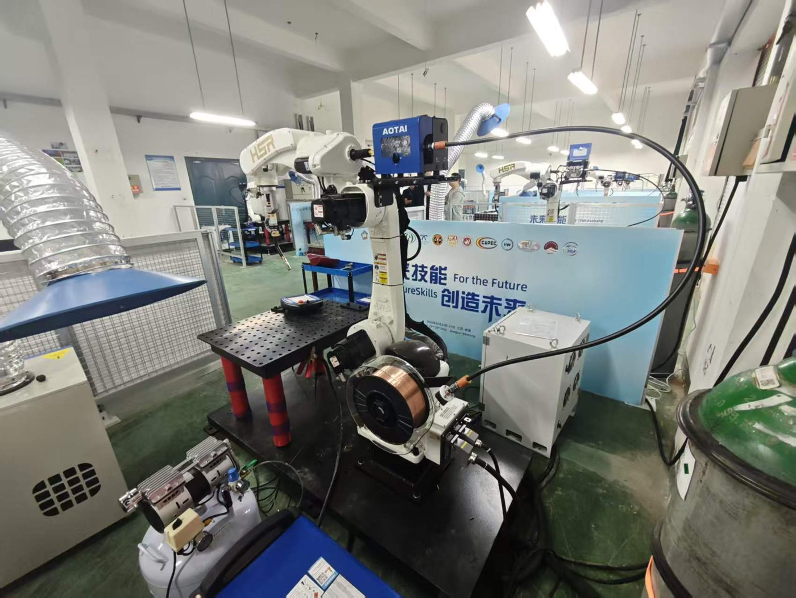

2025.09 – 2027.07
本科 · 排名 12/51
皖西学院 · 机器人工程
主修课程：工业机器人编程与维护、PLC 编程、MATLAB 图像处理、单片机、组态软件基础、机器人驱动及其控制
担任院党支部组织委员，统筹党务管理、党员发展与组织生活，累计组织各类党务活动 20 余场，覆盖党员 120 余人次，获评校级「优秀学生党务工作者」。
求职简历 · Resume
机器制造工程师 · 技术服务工程师
5 次省级以上机器人竞赛带队经验，精通机器人、PLC、机器视觉、数字孪生一体化产线调试， 熟悉工厂上下料、分拣、精密装配工艺，能快速对接现场需求。持 3 项工业实操证书， 可独立完成工作站电气装配、传感器校准、通信故障排查，适配自动化调试全流程。 专升本阶段成绩优异，自学能力强，善于优化调试流程。
责任心强，擅长团队统筹，能够适配项目攻坚节奏。
接受驻场与短期出差，可快速融入企业一线技术团队。
擅长输出标准化技术文档，具备良好的技术沉淀习惯。

主修课程：工业机器人编程与维护、PLC 编程、MATLAB 图像处理、单片机、组态软件基础、机器人驱动及其控制
担任院党支部组织委员，统筹党务管理、党员发展与组织生活，累计组织各类党务活动 20 余场，覆盖党员 120 余人次，获评校级「优秀学生党务工作者」。
主修课程：PLC 编程、工业机器人编程与维护、工业机器人系统集成、电气控制、液压气压控制
连续 3 年专业成绩、综测排名均为专业第一；获国家奖学金 1 次、校级一等奖学金 2 次；获评校优秀毕业生、安徽省优秀毕业生、校级优秀团干、优秀团员。
职业院校教育方向 · 自动化产线集成与虚拟预调试





PLC 编程（TIA Portal STEP7）· 工业机器人示教编程 · 产线机电联调 · 传感器校准 · 工业以太网通讯配置
SolidWorks 三维建模 · CAD 工程图绘制 · MATLAB 仿真分析
Python + Qt 界面开发 · WinCC HMI 界面设计
标准化技术文档输出 · 跨团队项目统筹 · 工业现场故障排查
点击任意图片可放大查看，左右切换浏览。